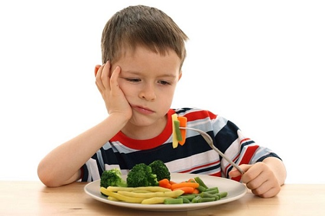

Все родители пугаются, увидев, что их ребенок упал в обморок, и по вполне понятным причинам! Хорошая новость — большинство обмороков среди детей и подростков являются разовыми случаями и о них не стоит беспокоиться. И только в редких случаях обмороки действительно происходят в результате чего-то более серьезного.
ПРИЧИНЫ
В большинстве случаев обмороки (в медицинской терминологии — синкопы или синкопе) являются результатом естественного рефлекса человеческого тела. Этот рефлекс служит причиной внезапного падения сердечного ритма и/или артериального давления, что приводит к кратковременному уменьшению кровотока к мозгу. Поскольку кровь переносит кислород, это означает, что на очень короткий период мозг испытывает легкое кислородное голодание, служащее причиной приступа обморока. В подавляющем большинстве случаев, когда ребенок оказывается в лежачем положении, кровоток к мозгу восстанавливается и вскоре ребенок приходит в сознание. Но что же может послужить причиной этого резкого спада сердечного ритма и/или артериального давления? Наиболее распространенными причинами являются:
Список, приведенный выше, представляет собой распространенные причины обмороков, при которых, как правило, не стоит волноваться. Не торопитесь вызывать реанимацию или везти ребенка к врачу после простого обморока, если вы считаете, что он произошел по одной из вышеуказанных причин. Наблюдайте за ребенком и вызывайте врача, только если ребенок не приходит в сознание сразу после падения в обморок.
СОВЕТ ДОКТОРОВ СИРС: КОНТРОЛЬ ПИТАНИЯ Родители! Если ваш подросток часто жалуется на головокружение и у него случаются обмороки, исследуйте его рацион, режим питания и употребления жидкости. Возможно, он ограничивает количество еды или употребляет недостаточно жидкости. Эти симптомы могут быть признаком неправильного режима питания, что очень распространено среди подростков. Конечно, если у него есть эти симптомы, обратитесь к врачу. |

КОГДА СТОИТ БЕСПОКОИТЬСЯ
Иногда обморок может быть признаком более серьезного заболевания. Если у вашего ребенка случаются обмороки, описанные ниже, вы должны посетить врача, чтобы исключить что-то более серьезное. Случаи, которые должны вызывать больше волнения, включают:
• Отключение во время выполнения физических упражнений. Ребенка надо немедленно показать врачу, поскольку это может быть признаком редкого, но потенциально опасного для жизни заболевания сердца. Если у вашего ребенка или подростка случается обморок или потеря сознания во время физических нагрузок, врач сделает анализы, чтобы удостовериться, что сердце правильно функционирует. При подозрении на проблемы с сердцем следующим шагом должен стать визит к детскому кардиологу. Тем, кто теряет сознание во время физических упражнений, необходимо пройти медицинское обследование, прежде чем вернуться к занятиям спортом.
• Повторяющиеся обмороки. Крайне редко обмороки могут быть проявлением развивающейся эпилепсии. Если вы замечаете, что приступы у вашего ребенка повторяются, перед приступом у него пустой взгляд, судорожные подергивания (до, во время или после приступа), длительная вялость и сонливость после, необходимо пройти обследование, чтобы убедиться, не страдает ли ваш ребенок эпилепсией.
ЛЕЧЕНИЕ
Наилучшим способом лечения является обнаружение причины обморока. Большинство случаев — разовое явление, и их причина так и не будет найдена. Вот почему важно, чтобы ваш доктор проводил тщательный медосмотр и вел историю болезни ребенка, который падает в обморок, чтобы убедиться, что не происходит ничего серьезного.
Здоровье ребенка от докторов Сирс / Сирс У. и др.